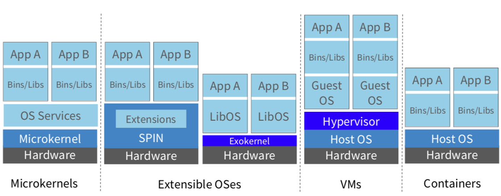
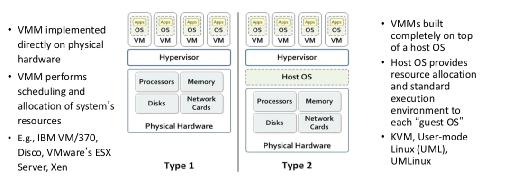
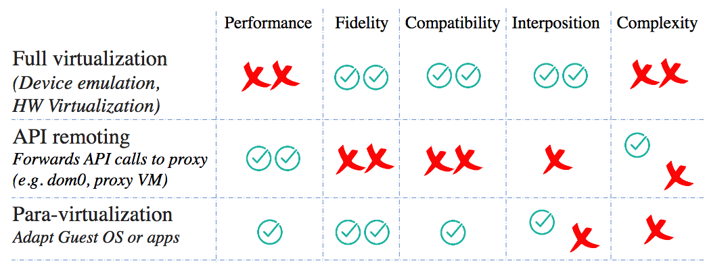
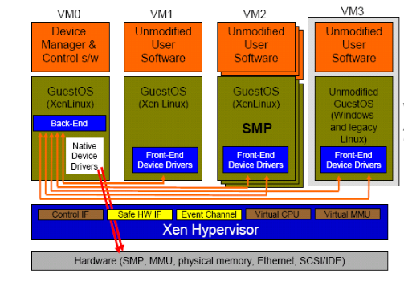

"Xen and the Art of Virtualization"
Problem
Provide a high performance resource-managed virtual machine monitor (VMM) that provides performance guarantees to concurrent execution of multiple operating systems: "hosting up to 100 virtual machine in- stances simultaneously on a modern server"
Background
- Big picture

- Two types of VMMs

-
Virtualization techniques 1
- Fidelity: A program running under the VMM should exhibit a behavior essentially identical to that demonstrated when running on an equivalent machine directly.
- Interposition: All guests actions go through monitor; monitor can inspect, modify, deny operations (e.g., compression, encryption, profiling, translation)

-
Full virtualization is slow:
- VMWare's ESX Server dynamically rewrites portions of the hosted machine code to insert traps whenever VMM intervention might be required. This applies to entire guest OS as all non-trapping privileged instructions must be caught and handled.
- ESX Server maintains shadow page table and to maintain consistency with virtual tables, it traps every update.
System Design

-
Paravirtualization: idealized machine, efficient to virtualize
- More efficient than "full" virtualization
- Cost: need to modify OS
-
For safety: Xen exists in a 64MB section at the top of every address space, thus avoiding a TLB flush when entering and leaving hypervisor
-
CPU:
- X86 supports 4 privilege levels: Without Xen, 0 for OS, and 3 for applications; Xen downgrades OS to level 1, and it runs level 0
- Syscall and page-fault handlers: registered to Xen; "fast handlers" most exceptions, don't invole Xen
-
Paravirtualization techniques:
- Run VMM at ring 0, OS at ring 1 (app stays at ring 3)
- System calls vector directly to guest OS without VMM involvement. Validate handler at install time.
- Page fault handler doesn't read
cr2to get faulting address, put it in stack frame. VMM must execute to readcr2 - Mappings validated when page tables written (same as exokernel)
- Updates to page table are batched and validated in bulk. Avoiding interrupt-like updates is an important technique.
- Type and reference count for each physical frame (PD, PT, LDT, GDT, RW)
-
Hardware physical to machine memory mapping readable by all VMs.
- Needed by guest OS for writing page table, and useful for superpages or cache coloring.
-
VMs have access to both real and virtual time.
- All devices use shared-memory asynchronus buffer-descriptor rings (a batch interface)
-
Interrupts replaced with event delivery bitmap.
- Events can be held off like disabling interrupts.
- Some control over notification granularity, allowing latency/bandwidth tradeoffs (e.g., notify for every packet, or every 16 packets)
-
I/O requests have a unique ID and can be reordered
- E.g., Guest OS and Xen can schedule the disk arm
- But guest can pass a reorder barrier to prevent some reordering (e.g., for file system consistency)
-
OS makes hypercalls to VMM (e.g., install page table entries)
-
Other important ideas:
-
Domains are virtual machines:
- Domain 0 provides the administrative functions of the VMM (keeps complexity out of the VMM proper)
- Domain 0 contains the real device drivers (domain 0 is the target of malware attacks)
-
Virtual network devices (VIFs) may filter packets to prevent spoofing
-
Memory is paritioned across domains. A domain provides memory for I/O operations. 1 page per packet (wow).
-